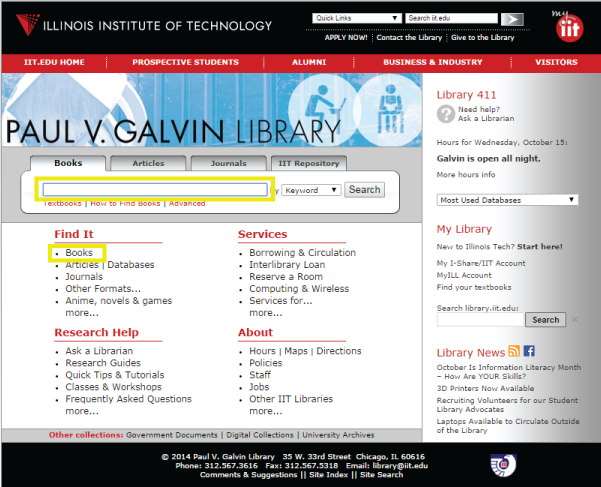
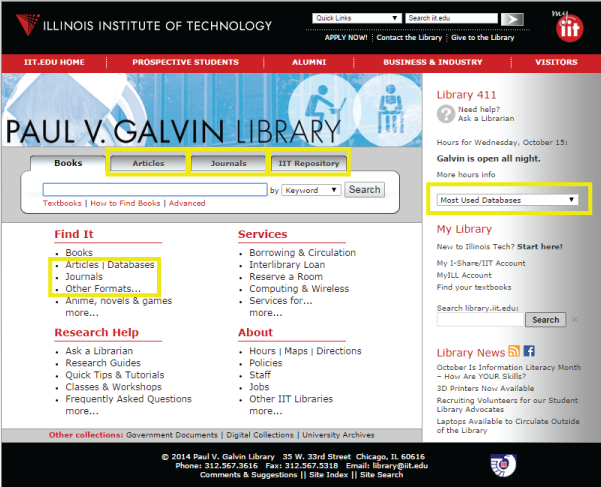
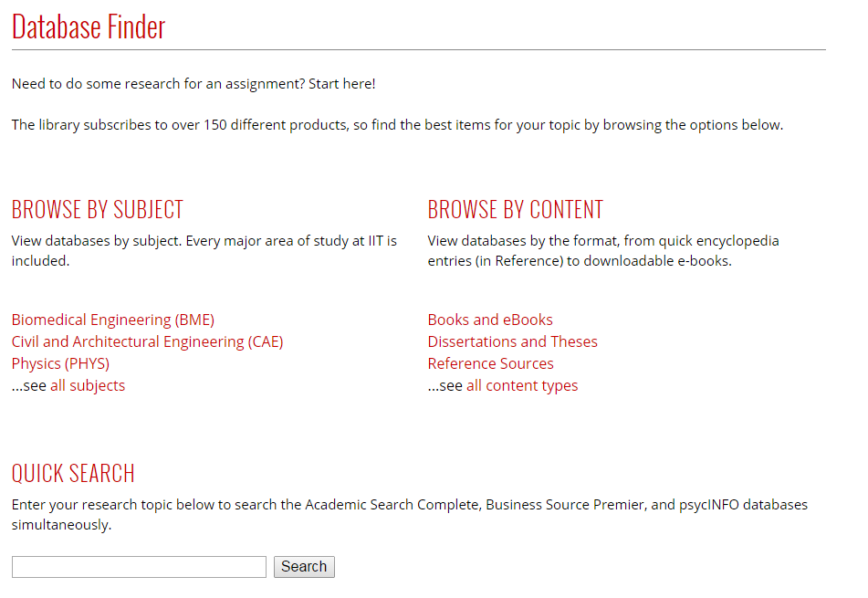

The home page of the current library website (http://library.iit.edu) includes a search box that sends a query to the local instance of the library's online public access catalog (OPAC). There only three types of items an OPAC search will return. The first includes physical items in the library's collection: books, videos, theses, etc. The second are scanned files from the HathiTrust digital project. The project includes digitized content from the Google Books and Internet Archives projects, as well as individual libraries' digitization efforts ("Our Partnership"). The last type of items returned are bibliographic records for electronic books. Books24x7 and SpringerLink are two vendors that supply us with these records, but they are in the minority; the library does not receive (nor could our infrastructure accommodate) files of the millions of journal articles that comprise the majority of our database subscriptions. This means that only searching for material in the OPAC will leave the majority of the library's collection unused.
Students will often ignore all other options on the library's cluttered home page in favor of entering their research topic directly into the home page search box,2 which triggers an OPAC search. Some searches yield fruitful results: a search for "javascript" will turn up many relevant examples from our e-book subscriptions (see result at http://tinyurl.com/OMQSRUT). If the search doesn't locate items owned by Galvin Library, however, the results page will either show results from the HathiTrust database, or display a "no results found" message. An example would be a search for the "fall of the Roman Empire". Searching for this phrase will return many results from the OPAC (seen here: http://tinyurl.com/Q5VT9MX), but it is unlikely that an undergraduate student writing a short paper for a history class will be interested in the five-volume set written in 1845—this was the first item returned when this paper was written.
2This and the following are examples of IIT students' behavior, either provided anecdotally by the students themselves, or witnessed by librarians watching students do research.
Students who only search for their topic from the library home page become frustrated by the limited results and often abandon the library site for Google. A cognitive bias now known as the Dunning-Kruger effect leads them to believe that the thousands of results returned by a search engine means that they are performing research effectively (Gross 2012). Justin Kruger and David Dunning's 1999 study of psychology students showed that those who lack knowledge in an area cannot successfully judge competence in that area—whether it is their own or others' ability being assessed (Kruger 1999).
Software has been developed to simulate the Google experience for library users; it is called a "discovery layer" and allows an institution access to a centralized index of millions of journal articles, along with the local holdings of the library (Hoeppner 2012). Galvin Library does not have a subscription to discovery later software such as Primo, Summon, or AquaBrowser, so it is imperative we improve how our electronic resources are displayed. The library budget from fiscal year 2013 allocated 88% of its purchasing funds on subscription resources like databases versus 3% of one-time purchases of books, videos, and other physical items. This suggests that the website should mainly focus presenting links to databases rather than books, but that is not currently the case.
Figure 16 below is a screenshot of the library's home page. The highlighted areas are links to book resources.
Figure 16: Current home page, book-related items.
Next is the same page with the library's electronic resources highlighted—those that can be accessed from off-campus (figure 17).
Figure 17: Current home page, database items.
While there are a greater number of database links, they all require an additional clicks to get to the information, something many students aren't willing to attempt. One major change to the new site will be to remove the OPAC search box from the library home page and replace it links that will more quickly direct students to databases. The new home page change will reflect the preference for electronic items over print. This will also bring the site into alignment with the library's vision of providing "innovative programs, infrastructure and outreach" ("Paul V. Galvin - Mission"). A recent study has shown that use of the library's databases or e-books are one predictor of success in first year undergraduates: students who used the library and its resources had a higher average GPA than those who did not (Soria, 2013).
There is a method to allow students to perform a search of several—not all—subscription databases that can be added to the website at no additional cost. The EBSCO and ProQuest database vendors have created interfaces that will perform a simultaneous search of their own resources. For the student quickly looking for articles to support a short research paper, a search form such as this may provide enough immediate results to encourage them to stay on the library's website instead of abandoning it for Google.
Examples of the new home page featuring the database finder and quick search box from EBSCO (figure 18) can be viewed at http://216.47.136.104/.
Figure 18: New website home page.
Screenshot taken March 1st, 2015.
